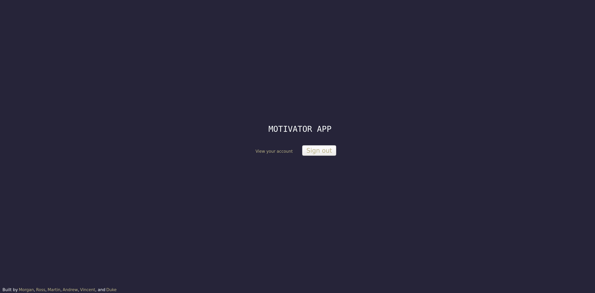
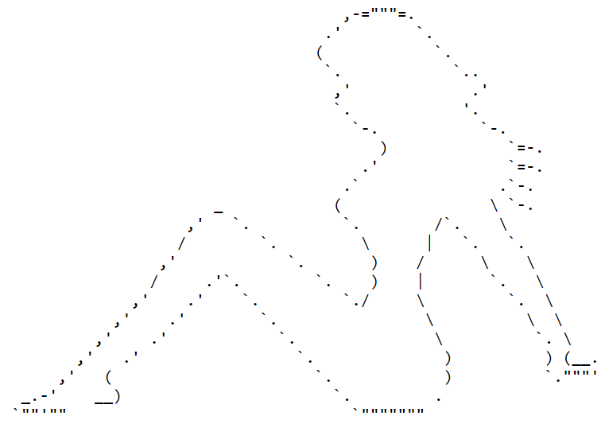

A workout tracking website built for my final assessment at Coder Academy. Access the live deployment by clicking the image above. The frontend repo is hosted here and the backend repo is hosted here.
Quora clone built in a 2 day hackathon while studying. Built with Ruby on Rails in collaboration with fellow students Ross and Duke. A live version is available by clicking here.
Flatten the Curve Hackathon

Website built over Easter weekend 2020 for the ACS #FlattenTheCurveHack Hackathon. Collaborative project with fellow Coder Academy students Ross, Martin, Andrew, Vincent, and Duke.
This is a CLI app based on Kahoot! Programmed in Ruby, it allows the user to select the amount of questions they wish to answer.
King Gizzard & The Lizard Wizard fan site
A fanpage dedicated to the greatest Rock Band in the world: King Gizzard and the Lizard Wizard.
Karona virtual partner app

A virtual partner app programmed in my very first Hackathon! CLI based and programmed in Ruby, it offers 3 different personality types and a variety of features including:
- Checking for Coronavirus Symptoms
- Letting you work while regularly reminding you to hydrate and stretch
- Flirting with you
- Playing games (the good type)